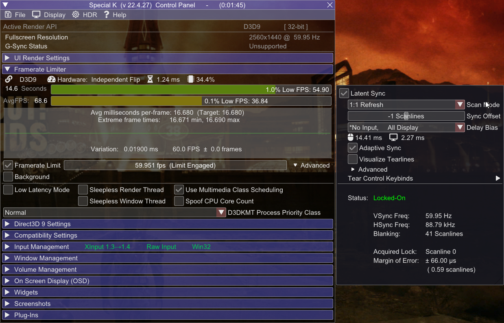

Introduction
Welcome!
Goal of this guide is to fix the abysmal performance in Fallout New Vegas by using more modern technologies and tweaks, and make you generally aware of its quirks and other potential issues.The guide is mostly written with an assumption that you've completed Utilities sections from Viva New Vegas, Wasteland Survival Guide or Essentials from The Best of Times, but it'll still cover mods contained within those guides.
While the guide is focused on this particular game, most stuff shown here is applicable to other games.
Why?
Let's be honest here - the engine did not age well. The renderer is based on now 20 year old DirectX 9, which fails to fit-in with modern GPUs and Windows.
It's extremely inefficient and CPU bound, has glaring issues with display modes, memory handling and overall stability.
As for Bethesda's code - it also fails (horribly) to scale well with modern CPUs, something that you can see even in their latest titles.
To make things worse, Fallout New Vegas was compiled without compiler optimizations.
In short most performance issues can be summed with two words - CPU bottleneck.
Even with that fact in mind, there are some tweaks to be done on the GPU and presentation side of things that can help with the overall responsiveness of the game, despite not fixing the performance on its own.
Terminology
Things that are good to know
-
Vertical Synchronization (V-Sync) - technology allowing to keep display's scanout and refresh in phase to eliminate screen tearing,
at the cost of higher latency.
(Latency lowers along with refresh rate) - G-Sync | Freesync - Variable Refresh Rate (VRR) technologies developed by NVIDIA and AMD respectively. They allow the display to adapt its refresh rate to the framerate, allowing to use V-Sync at arbitrary framerates and reduce its latency[1] .
- Multiplane Overlays (MPOs) - hardware scanout planes for the GPU. They allow for hardware image composition without any latency or performance penalty (for example displaying windows on top of each other), as well as their hardware scaling and stretching. MPOs are supported since Windows 8.1. Hardware capabilities vary between GPU manufacturers.
- Yes, despite popular misinformation, VRR alone doesn't get rid of tearing. It can minimize the rolling tear however, but that varies between displays, and such, it's not a guaranteed feature. Additionally, the latency reduction applies only at framerates below V-Sync window (display's native refresh rate) - if framerate matches the native refresh rate, VRR engages V-Sync emulation.
Technicalities
More text inside. Explains the concept of presentation models and display modes. While not needed to use the guide, it'll help you with understanding why things are the way they are.Graphics Drivers and Windows
Driver Updates
Not much to say here - for the best compatibility and performance, you must be using the newest driver for your graphics card.
You can check what GPU you have by opening Task Manager, and going to the Performance tab - the last GPU on the left pane is your main one.
If you don't see any GPU there, that means your GPU is too old to use DXVK.
This step is mandatory if you want to use DXVK!
Select your graphics card to go the driver download page |
||
|---|---|---|
Windows watermark
Make sure your Windows is activated, otherwise the watermark will kick the game into the DWM composition, which leads to increased latency, worse performance and disables VRR.
If you don't have a GPU with MPO (Multiplane Overlay) support, you can mitigate this by disabling Fullscreen Optimizations.
It's still weird to have unactivated Windows though.
How to check if your GPU supports MPOs:
- Type dxdiag into Windows search
- Click Save All Information and save the file.
- Open the DxDiag.txt file, press Ctrl+F and look for MPO MaxPlanes
- If the number is greater than 1, then your GPU has MPO support.
Having the watermark without MPOs will disable VRR and increase latency and stuttering!
This applies only to D3D9 with Fullscreen Optimizations and DXVK with DXGI, since D3D9 Windowed is already in the composed mode, and DXVK uses FSE.
If you have:
- Nvidia 16 series and newer
- AMD Vega and newer
- Intel CPUs 8th Gen and newer
Virtualization
Windows 11 uses virtualization features to increase OS and inter-process security. Unfortunately, this can come at a performance cost, especially on lower-end hardware.I won't be writing on how to disable them, because... Microsoft already made a tutorial about it.
This step is not mandatory, as when it comes to security, it's up to you to decide. Just letting you know that this exists, and even Microsoft acknowledges the fact that it can degrade perfomance.
Display mode differences
Presentation problems
Here's a comparison of three display modes you can use in this game. Situation is problematic mainly due to Vulkan and D3D9 using old presentation models.
Flip Windowed
|
Fullscreen |
BitBlt Windowed
|
|---|---|---|
|
|
|
|
|
|
- Nvidia recreates the swapchain every frame. This needlessly degrades performance and introduces compatiblity issues.
- Despite that disabled V-Sync unlocks the framerate, window itself is V-Synced, so you don't get any benefits.
-
While AMD enables Freesync for Fullscreen Windowed BitBlt surfaces, Nvidia allows G-Sync to run with any window.
This is problematic because refresh rate can get synchronized to wrong windows, framerate may break on other displays and display stutters may occur.
Enabling it globally is a bad idea, because it disrupts normal desktop usage (e.g. screen can sync to sleeping windows).
It's recommended to use Nvidia Profile Inspector to set G-Sync Application Mode to "Fullscreen and Windowed" in Fallout - New Vegas profile. This makes Windowed G-Sync run only when Fallout New Vegas is running.
Keep in mind that even with this method, this G-Sync implementation is still buggy - if you get any of the forementioned issues, disable it.
Never enable Windowed G-Sync globally!
lStewieAl's Tweaks and Engine Fixes
All-in-one
If you use Viva New Vegas, The Best Of Times or Wasteland Surival Guide guides, you may skip this step since it's already included there
Installation
-
If they are not already installed, download lStewieAl's Tweaks and Engine Fixes and Stewie Tweaks INI (Optional Files section) from Nexus and install them with your mod manager.
- Launch your game to populate the INI file, then exit
-
Open nvse_stewie_tweaks.ini in Mod Organizer and edit:
Enables tons of optimizations to vanilla functions, which leads to decreased loading times and improved general performance.bInlineVanillaFunctions=1
New Vegas Tick Fix
Stutter remover
New Vegas Tick Fix is a mod by karut that fixes and improves game's internal clocks and memory management, which dramatically reduces stutter. It also allows for playing above 60fps without breaking physics.Additionally, it has some DirectX changes, which help with performance and greatly reduce memory usage.
Installation
-
If it's not already installed, download NVTF from Nexus and install with your mod manager.
-
Double-click on NVTF in Mod Organizer, then open NVTF.ini in the INI Files tab, and set:
Enables NVTF's DirectX changes.bModifyDirectXBehavior = 1
It's required for following settings to work:-
Enables triple buffer V-Sync, which gets rid of problematic framerate halving on FPS drops/ instability caused by double buffer V-Sync.
bToggleTripleBuffering = 1
This change has no effect if you don't use V-Sync
The potential latency increase is eliminated by properly capping FPS, which is done later in the guide -
Enabled by default
bUseDefaultPoolForTextures = 1
Disables texture mirroring between VRAM and RAM, which decreases RAM usage. Allows to use high resolution textures.
It's required if you play at resolutions higher than 1080p.
This change breaks Alt-Tab functionality in Fullscreen Mode.[6]
To mitigate that either use DXVK, or Windowed Mode.
Or just don't Alt-Tab.
If you are lucky to have a Ryzen 7 5800X3D CPU, you can enable this setting for a massive performance boost.
Other CPUs don't get any benefit due to insufficient cache size.bAlternateGTCFix = 1
-
-
D3D9 loses the graphics device if it loses the screen ownership (Alt-Tab, Sleep, etc.). To recover, it needs to either have a copy of textures in RAM, or be able to reconstruct the memory from ground up.
Fallout New Vegas, like most D3D9 games, use the first method. Thus by disabling this behavior, after Alt-Tabbing, game is in a limbo where it doesn't know what to do.
DXVK fixes this by simply being in place of D3D9, while Windowed mode guarantees the game will never own the screen in the first place.
DXVK
Translation magic
DXVK is an open source Direct3D 9-11 to Vulkan translator project lead by doitsujin and Joshua Ashton. While created mainly for Linux, works unofficially on Windows.In short, it allows to run Fallout using Vulkan API which has benefits of much lower draw call overhead than D3D9, which is one of the main performance limiting factors in this game.
If you use Linux, most of this is irrelevant, since Proton on Linux obviously uses DXVK already.
Things about DXVK you must acknowledge:
-
DXVK improves performance in mainly draw call (CPU) bound scenarios (e.g. draw distance), and usually doesn't help much in GPU bound ones (e.g. resolution)
-
It is possible that DXVK won't change anything for you, or even make things worse
-
-
DXVK 2.0 requires:
- A Vulkan 1.3 driver
- A VK_EXT_robustness2 driver extension
Keep in mind that even with those conditions met, DXVK 2.0 may not work correctly for you, due to its Linux-based nature. -
DXVK's GPU compatibility varies between manufacturers
-
Nvidia GPU laptops must use the DXGI interop (see below).
Using it on desktops is not required, but highly recommended for the most optimal experience -
AMD GPUs are more prone to shader issues on Windows (situation is completely reversed on Linux)
AMD dGPU laptops lacking direct dGPU output can not use DXVK due to presentation issues. (Integrated graphics work fine.)
(Vulkan runs in a broken state, GPU is underutilized and can't use proper fullscreen mode - on Nvidia this is resolved by using DXGI presentation, AMD lacks such feature). -
Intel GPUs from 6th Gen and newer can work provided you have newest drivers installed.
DXVK is broken past the 1.10.1 version.
Don't expect a big performance difference, if any, since the game will still be mostly GPU bound.
-
-
Fallout New Vegas has some known shader issues. They are not guaranteed to happen (getting rarer with DXVK updates), but they can occur:
- Broken transparency multisampling - transparent textures are dithered (Guaranteed - DXVK issue with handling driver formats)
- Broken water reflections (Rare, most reports come from AMD cards)
- Broken lights and artifacting (Rare, most reports come from AMD cards)
Due to DXVK's nature it relies on shader cache, which is compiled during the first use of that shader.
Because of that you can experience increased short stutter at the beginning of your playthrough.
This is completely normal, and will not reoccur after compilation has finished.
DXVK-Async patch by Sporif alleviates this problem thanks to making the compilation asynchronous
DXVK 2.0 resolves this on latest Nvidia drivers by precompiling shaders on launch, but async patch still applies to other GPUs.
Installation
-
Open DXVK-Async Github page and click on dxvk-async-2.0.tar.gz to download it
GPUs lacking VK 1.3 support or having issues with 2.0, must use the 1.10.3 version
Intel GPUs need to use the 1.10.1 version
-
Extract d3d9.dll from x32 folder inside downloaded archive to your Fallout New Vegas root folder
-
Download dxvk-conf.zip and extract its content to Fallout New Vegas root folder
Included dxvk.conf file enables the async patch and sets the "Float Emulation" setting to "strict" for better compatiblity and potentially less z-fighting.
Enabling Flip Model (DXVK with DXGI)
At the time of writing, this feature is Nvidia only!
Nvidia resets those settings on driver updates! Make sure to reapply them after updating.
Thanks Nvidia!
- In Nvidia Control Panel, in 3D Settings, set Vulkan/OpenGL present method to Prefer layered on DXGI Swapchain
- Press Apply changes and exit
- Download Nvidia Profile Inspector
- Enable "Show unknown settings from NVIDIA predefined profiles" in the top bar (penultimate button)
- Press Ctrl+F and paste OGL_DX_PRESENT_DEBUG
- Select the setting and click on Show bit value editor on the top bar (last button).
-
In the first column, check bit #00 and #19
These flags enable DXVK support and fix forced promotion to FSE in some games.
- Click Apply & Close
- Enable Windowed mode in FalloutCustom.ini
- Install OneTweak to disable window borders.
You can use global profile if you want to use Flip Model in all OpenGL and Vulkan titles
If you don't see those options, then your driver is not up to date!
[Display]
bFull Screen=0
Recommended framerate limiters and their configurations
(Not) Pushing the limits
Limiting framerate is very important for overall stability.First and foremost, if you are using a good limiter, you'll be implementing correct framepacing, which is the most important think for the overall fell of fluidity.
More advanced limiters can also reduce latency or power consumption (It's difficult to have both).
Always limit your framerate to an amount you can actually achieve, otherwise you won't get any benefits!
Letting your GPU overwork itself has a big latency impact, so try to cap your framerate at such value, where your GPU doesn't sit at constant 100% usage.
Running at smoother, lower framerate is always better than high, albeit laggy and stuttery one.
Recommended setups
Recommended configurations based on selected display scenarios:-
V-Sync
- Framerate must be capped slightly below refresh rate to reduce latency
V-Sync on its own is NOT a limiter. Using it as one introduces a latency penalty
-
G-Sync | Freesync
- V-Sync must be enabled, in order to fully get rid of tearing
- Framerate must be capped below refresh rate, in order for VRR to not disengage and fallback to V-Sync, as this causes a very big increase in latency
-
No V-Sync
- No special prerequisites.
Finding the limit
Enter your refresh rate here for automatic calculation of FPS limits in the next section. You can find your exact refresh rate here.
If you don't use, or not have VRR, it's best to limit your framerate to fractions of your refresh rate. (30 at 60hz, 72 at 144hz, etc.)
So many options...
Limiters presented here are ordered by their precision, from best to acceptable. The better ones are smoother and can provide better latency reductions, but are not as fast to setup compared to the built-in driver alternatives and may have some compatibility issues.
Special K
Special K is a mod by Kaldaien focused mainly on fixing performance in games and implementing HDR.Its list of features is too long to write here, but the most important one used here is its incredibly versatile limiter and if using DXGI, HDR and (almost) lagless V-Sync.
Warning!
- Special K works only on Windows 8.1 and higher
- Special K may conflict with Riva Tuner. If the game crashes or SK doesn't show up in game, make sure Riva Tuner is not running, or set Riva Runer's injection delay to 30000
- Special K's interface breaks water reflections when visible. This is fixed by DXVK. (Or simply just don't have it visible).
- Special K doesn't natively support Vulkan, so when using DXVK without DXGI it recognizes the game as D3D9.
- Nvidia and Steam Overlays can sometimes block Special K from displaying with DXVK - DXGI. If you don't see the Control Panel, try disabling these overlays.
I'm not providing calculated values here, because Special K already does that automatically, and with higher precision
Installation
- Download the Special K Archive from the Stable section, then extract SpecialK32.dll to your Fallout New Vegas root folder and rename it to dinput8.dll
- Download the archive with preconfigured settings and extract its content to your root folder.
- Launch Fallout New Vegas and press Ctrl + Shift + Backspace to enter Special K Control Panel
-
Enable the Framerate Limit by ticking the checkbox, then right click on the bar (not graph) next to it:
-
No V-Sync
In right click menu select your refresh rate
Click on Advanced and select the Latent Sync (VSYNC -Off-) modeOptional - Configuring Latent Sync to get rid of tears

-
V-Sync
In right click menu select your refresh rate, then Ctrl-Click on the Framerate Limit bar and subtract 0.05
If you use DXVK with DXGI, ignore above statement and:
In right click menu select your refresh rate
Enable Waitable SwapChain in Direct3D 11 Settings, under SwapChain Management
-
VRR + V-Sync
In right click menu select VRR Bias and select the highest value.
- The bias option is not needed for lower values.
If you use DXVK (without DXGI), you must double your limiter value, otherwise you'll get halved framerate
-
No V-Sync
- Open the HDR menu at the top of Special K's control panel menu and press the HDR Setup button.
- Select the scRGB HDR option from the HDR Calibration widget.
- Restart the game.
- For more information, see Special K Wiki
Your configuration should look similar to this (DXGI configuration shown, D3D9 one is more barebones)

Nvidia Exclusive - HDR output
If you have a HDR compatible display, you can use Special K to output in native HDR!
Keep in mind that it will decrease your performance due to higher render bit depth.
RivaTuner Statistics Server
Riva Tuner Statistic Server by Unwinder is probably the most famous FPS Limiter and OSD software, thanks to its performance, compatibility and power usage.
NVIDIA | AMD driver
The most basic limiters from this list, but definitely the easiest and fastest to set up!
NVIDIA
AMD
FAQ
Are these questions really frequent?
-
I can't use DXVK or DXGI, and I need to Alt-Tab - am I out of luck?
Yeah, all you can do is download OneTweak and use the legacy Windowed mode.
Also enable Windowed mode itself in FalloutCustom.ini (OneTweak itself doesn't change display modes)[Display]
bFull Screen=0 -
Any way change brightness in Windowed Mode?
You can use ReShade or Dynavision to change the gamma. -
Do texture mods really have an impact on performance?
Not directly, no. As long as you don't go over your VRAM budget and use NVTF's memory pool patch you'll be fine. If you run out of VRAM, you'll either crash, or experience massive stutters.
What is guaranteed from higher resolution textures is increase in their load time. This can translate into longer stutter periods on cell loads. -
You talk about HDR. I thought FNV already had it?
HDR mentioned in game setting refers to HDR rendering, where game renders lighting passes in 16 bits, instead of 8. This leads to properly glowing lights thanks to the precision of using 65536 colors per channel instead of 256. (Glowing elements won't be clamped anymore, and will glow instead.)
Due to the old age of the game, this data is later converted to 8 bit SDR (HDR in Windows was added in 2017!). Additionally, D3D9 obviously doesn't support HDR output in the first place, hence the need for the DXGI interop. -
DXVK is breaking HDR after exiting the game!
Yes, unfortunately due to how FSE works, in addition to lack of native Windows support from DXVK, it doesn't properly handle the HDR API.
If you have a Nvidia GPU, use DXVK with DXGI (You'll get actual HDR too!). Otherwise, normal Windowed. -
Is dgVoodoo 2 a viable alternative to DXVK?
No. While it's true that you'd gain Windowed mode with Flip Model and HDR from it, in contrast to DXVK you are guaranteed to get lower perfomance due to the translation overhead.
If you can handle the performance loss, sure go ahead. -
Is it possible to use D3D9Ex in Fallout New Vegas?
Technically yes - Fallout New Vegas, oddly enough is the only Bethesda title with native D3D9Ex support. Does it work well? Not really.
While Special K's D3D9Ex enforcement works far better that NVTF's, it still suffers from CPU perfomance loss and increased GPU usage.
Finish
The End?
Congratulations! You've made it through! I hope this guide has helped you making Fallout New Vegas a smoother experience.If you have any issues, questions, critiques or recommendations hit me up on Discord - Wall_SoGB#2421.
You can also find me on xNVSE and Tale of Two Wastelands servers.
I recommend checking this guide from time to time - I'm not done yet.
If you found this guide helpful, share it with others or support me on Ko-Fi
Things worth reading
Here are some links to stuff that I recommend checking out:- Salamand3r's Texture Guide - nice and easy to follow texture guide by Salamand3r that actually doesn't break your game for a nice change of pace.
- PCGamingWiki - Great website, contains really helpful info about games, patches, fixes and other PC gaming related stuff.
- BlurBusters - Amazing website by Mark Rejhon focused on displays, latency and image quality. Really worth checking it out if you are a geek for these things.
Credits
This is the part where I'd like to thank people who have helped me in whatever way making this guide possible.-
Whole xNVSE server for being a great community. Especially:
- VishVadeva50 - for testing and helping with benchmarks
- c6 - for fixing the some engine functions so my testing could be easier
- LOC (aka ItsMeJesusHChrist) - for making the awesome logo for the guide
- nice try karut, but you are not getting credited
- Whole Special K server for also being a superb community with a lot of knowledgeable people. This guide would literally not exist without them.
- Glaceon575 - for helping with benchmarks and providing screenshots for AMD GPUs
- You